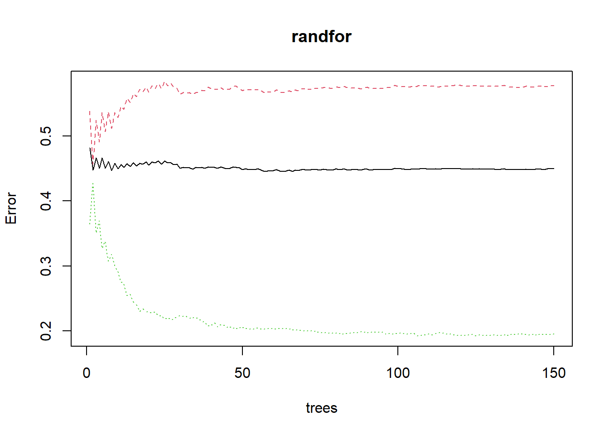

library(tidyverse) # datahåndtering, grafikk og glimpse()
library(skimr) # funksjonen skim() for å se på data
library(rsample) # for å dele data i training og testing
library(rpart) # klassifikasjons trær
library(rpart.plot) # funksjon for å plotte CART
library(ipred) # bagged decision trees
library(e1071) # variable importance
library(caret) # confusionMatrix()
library(randomForest) # for fitting random forests
library(fairness) # for calculating fairness metricsBagging og random forest
Oppgaver om bagging og random forest.
Bruk datasett fra Iowa prison study.
Oppgave 1
Tenk deg at du skal sette i verk et tiltak for å redusere tilbakefall til ny kriminalitet etter løslatelse fra fengsel. Det er opp til deg å vurdere hvordan tiltaket skal utformes, men du har ressurser til å implementere tiltaket for 20 % av de innsatte. Noe målretting må derfor til og du må bruke ressursene godt. Tiltaket skal rettes mot de som har høyest risiko for tilbakefall og det skal brukes en prediksjonsmodell for å gi en bedre risikovurdering.
- Hvilke vurderinger bør du nå gjøre for å velge hvem som skal motta tiltaket?
- Hvilke krav vil du stille til modellen og hva bør du sjekke?
Oppgave 2
Lag en modell for å predikere om en innsatt vil begå ny kriminalitet innen tre år etter løslatelse. Lag et training og testing datasett, og bruk set.seed(42) slik at du kan replikere resultatet. Bruk først et enkelt klassifikasjonstre og deretter med bagging. Sammenlign resultatene.
- Juster modellene slik du selv ønsker.
- Prediker og sjekk resultatet med confusion matrix for begge modellene.
- Hvilken modell gir best resultat på testing datasettet?
- Er det noe bias i modellene? Noen tegn til systematisk forskjellsbehandling?
Oppgave 3
Gjør nå det samme med random forest.
Løsningsforslag
Les inn dataene. Her har jeg også lagt til en funksjon for å rydde opp i variabelnavnene. Det er litt surrete i dette datasettet. Sjekk frekvenser for noen variable. Det er bl.a. litt vel mange kategorier for etnisitet. Her bruker jeg str_detect() til å lage en kategori for hvit og ikke-hvit. Er da et poeng å etterpå slette opprinnelig variabel med select(). Merk at residiv-variabelen er numerisk. Det er fint for noen teknikker, men her trenger vi en kategorisk variabel, så vi gjør om den.
Vurder evt. om du trenger rydde i flere variable også.
recidivism <- read.csv("data/3-Year_Recidivism_for_Offenders_Released_from_Prison_in_Iowa_elaborated.csv", stringsAsFactors = TRUE) %>%
janitor::clean_names() %>%
mutate(ethnicity = case_when(str_detect(race_ethnicity, "White") ~ "White",
str_detect(race_ethnicity, "Black") ~ "Black",
TRUE ~ "Other"),
recidivism_return_to_prison = factor(recidivism_return_to_prison_numeric)) %>%
select(-race_ethnicity, -recidivism_return_to_prison_numeric)
glimpse(recidivism)Rows: 26,020
Columns: 12
$ fiscal_year_released <int> 2010, 2010, 2010, 2010, 2010,…
$ recidivism_reporting_year <int> 2013, 2013, 2013, 2013, 2013,…
$ age_at_release <fct> Under 25, 55 and Older, 25-34…
$ convicting_offense_classification <fct> D Felony, D Felony, D Felony,…
$ convicting_offense_type <fct> Violent, Public Order, Proper…
$ convicting_offense_subtype <fct> Assault, OWI, Burglary, Traff…
$ main_supervising_district <fct> 4JD, 7JD, 5JD, 8JD, 3JD, , 3J…
$ release_type <fct> Parole, Parole, Parole, Parol…
$ release_type_paroled_to_detainder_united <fct> Parole, Parole, Parole, Parol…
$ part_of_target_population <fct> Yes, Yes, Yes, Yes, Yes, No, …
$ ethnicity <chr> "White", "White", "White", "W…
$ recidivism_return_to_prison <fct> 1, 1, 1, 1, 1, 1, 1, 1, 1, 1,…Oppgave 1.
Det er flere ting som er naturlig å vurdere.
- Hvilke konsekvenser kan tiltaket tenkes å ha? Både tilsiktede og utilsiktede. Dette har betydning for hvilke feilrater du vil godta.
- Modellen bør ha god nok prediksjonskraft, og det kan måles på ulike måter. Her kan du velge hva du synes er viktigst, herunder feilrater. Du bør også planlegge å sjekke om modellen slår ut forskjellig for undergrupper, dvs. sjekke noen fairness-mål.
- I forlengelsen av ovenstående: Kanskje du også skal vurdere hva som skal til for å forkaste hele planen? Eller er du villig til å jenke på kravene etterpå?
- Er det noen variable du ikke bør ha med i modellen? Det kommer an på tiltaket. Hvis tiltaket skal være før løslatelse vil det jo ikke være aktuelt å ha med variabler om løslatelsetype…
Oppgave 2.
Splitter først datasettet:
set.seed(42)
training_init <- initial_split(recidivism)
training <- training(training_init)
testing <- testing(training_init)Klassifikasjonstre
Prøv deg litt frem med ulike parametre. Her er et eksempel.
enkelttre <- rpart(recidivism_return_to_prison ~ .,
data=training, method="class", minbucket=100, cp=0.001, maxdepth=6)
rpart.plot(enkelttre)Sjekk resultatet
testing_pred <- testing %>%
mutate(recidivism_pred = predict(enkelttre, newdata=testing, type="class"))
tab <- testing_pred %>%
select(recidivism_pred, recidivism_return_to_prison) %>%
table()
confusionMatrix(tab)Confusion Matrix and Statistics
recidivism_return_to_prison
recidivism_pred 0 1
0 4147 1843
1 225 290
Accuracy : 0.6821
95% CI : (0.6706, 0.6934)
No Information Rate : 0.6721
P-Value [Acc > NIR] : 0.04396
Kappa : 0.1049
Mcnemar's Test P-Value : < 2e-16
Sensitivity : 0.9485
Specificity : 0.1360
Pos Pred Value : 0.6923
Neg Pred Value : 0.5631
Prevalence : 0.6721
Detection Rate : 0.6375
Detection Prevalence : 0.9208
Balanced Accuracy : 0.5422
'Positive' Class : 0
Sjekk fairness. Her er det jo en vurdering hvilke mål som er rimelig å bruke. Husk at det er en trade-off mellom ulike mål. Ikke sikkert modellen ser like fin ut på alle.
pred_rate_parity(data = testing_pred,
outcome = "recidivism_return_to_prison",
group = "ethnicity",
preds = "recidivism_pred"
)$Metric_plotMen så er spørsmålet: Er dette rettferdig nok?? Tja. Det er jo en vurderingssak. Gå evt. tilbake og gjør nye justeringer av klassifiseringstreet.
Bagging
set.seed(42)
baggedtree <- bagging(recidivism_return_to_prison ~ . , data = recidivism, nbagg = 100)
# Alternativt: mer komplisert modell som tar lengre tid...
# baggedtree <- bagging(recidivism_return_to_prison ~ . , data = recidivism, nbagg = 500,
# control = rpart.control(maxdepth = 6, cp = 0.0001))testing_bag <- testing %>%
mutate(recidivism_pred = predict(baggedtree, newdata=testing, type="class"))
glimpse(testing_bag)Rows: 6,505
Columns: 13
$ fiscal_year_released <int> 2010, 2010, 2010, 2010, 2010,…
$ recidivism_reporting_year <int> 2013, 2013, 2013, 2013, 2013,…
$ age_at_release <fct> 25-34, 25-34, 45-54, 25-34, 2…
$ convicting_offense_classification <fct> D Felony, D Felony, D Felony,…
$ convicting_offense_type <fct> Property, Drug, Property, Dru…
$ convicting_offense_subtype <fct> Burglary, Trafficking, Burgla…
$ main_supervising_district <fct> 5JD, 3JD, 1JD, , 5JD, 7JD, , …
$ release_type <fct> Parole, Parole, Parole, Disch…
$ release_type_paroled_to_detainder_united <fct> Parole, Parole, Parole, Disch…
$ part_of_target_population <fct> Yes, Yes, Yes, No, Yes, Yes, …
$ ethnicity <chr> "White", "Black", "White", "W…
$ recidivism_return_to_prison <fct> 1, 1, 1, 1, 1, 1, 1, 1, 1, 1,…
$ recidivism_pred <fct> 1, 0, 1, 0, 1, 0, 0, 1, 1, 1,…tab <- testing_bag %>%
select(recidivism_pred, recidivism_return_to_prison) %>%
table()
confusionMatrix(tab)Confusion Matrix and Statistics
recidivism_return_to_prison
recidivism_pred 0 1
0 4010 835
1 362 1298
Accuracy : 0.816
95% CI : (0.8064, 0.8253)
No Information Rate : 0.6721
P-Value [Acc > NIR] : < 2.2e-16
Kappa : 0.5574
Mcnemar's Test P-Value : < 2.2e-16
Sensitivity : 0.9172
Specificity : 0.6085
Pos Pred Value : 0.8277
Neg Pred Value : 0.7819
Prevalence : 0.6721
Detection Rate : 0.6164
Detection Prevalence : 0.7448
Balanced Accuracy : 0.7629
'Positive' Class : 0
pred_rate_parity(data = testing_bag,
outcome = "recidivism_return_to_prison",
group = "ethnicity",
preds = "recidivism_pred"
)$Metric
Black Other White
Precision 0.8229426 0.9710145 0.7571429
Predictive Rate Parity 1.0000000 1.1799297 0.9200433
Group size 1545.0000000 187.0000000 4773.0000000
$Metric_plotOppgave 3
Random forest bruker i utgangspunktet 500 trær og du kan evt. redusere antall trær for å få det til å gå raskere, men sjekk om det er nok.
set.seed(42)
randfor <- randomForest(recidivism_return_to_prison ~ . , data = recidivism,
ntree = 150,
sampsize = c(400, 500))
plot(randfor)
testing_rf <- testing %>%
mutate(recidivism_pred = predict(randfor, newdata=testing, type="class"))
tab <- testing_bag %>%
select(recidivism_pred, recidivism_return_to_prison) %>%
table()
confusionMatrix(tab)Confusion Matrix and Statistics
recidivism_return_to_prison
recidivism_pred 0 1
0 4010 835
1 362 1298
Accuracy : 0.816
95% CI : (0.8064, 0.8253)
No Information Rate : 0.6721
P-Value [Acc > NIR] : < 2.2e-16
Kappa : 0.5574
Mcnemar's Test P-Value : < 2.2e-16
Sensitivity : 0.9172
Specificity : 0.6085
Pos Pred Value : 0.8277
Neg Pred Value : 0.7819
Prevalence : 0.6721
Detection Rate : 0.6164
Detection Prevalence : 0.7448
Balanced Accuracy : 0.7629
'Positive' Class : 0
pred_rate_parity(data = testing_rf,
outcome = "recidivism_return_to_prison",
group = "ethnicity",
preds = "recidivism_pred"
)$Metric
Black Other White
Precision 0.4091797 0.5445545 0.4142353
Predictive Rate Parity 1.0000000 1.3308443 1.0123556
Group size 1545.0000000 187.0000000 4773.0000000
$Metric_plot